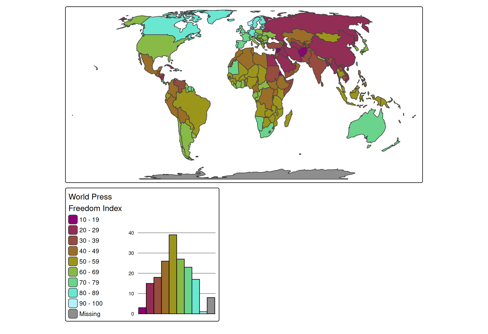
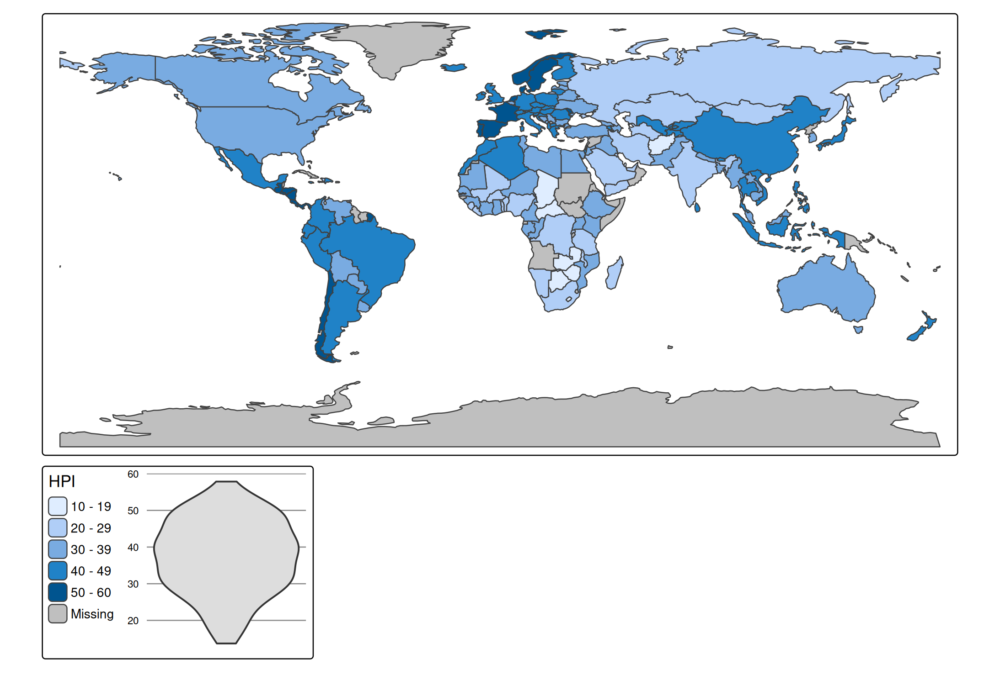
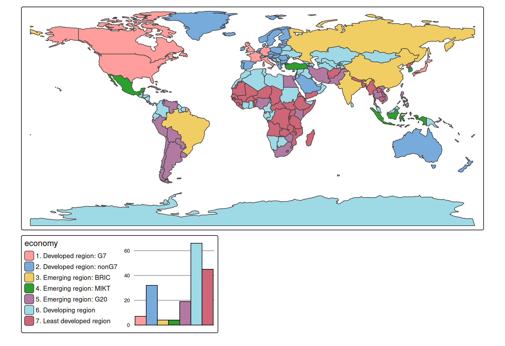

Introduction
Each visual variable (e.g. fill in tm_polygons()) has an additional .chart argument via which charts can be shown:
tm_shape(World) +
tm_polygons(
fill = "press",
fill.scale = tm_scale_intervals(n=10, values = "scico.hawaii"),
fill.legend = tm_legend("World Press\nFreedom Index"),
fill.chart = tm_chart_bar()) +
tm_crs("auto")
Chart types
Numeric variables
tm_shape(World) +
tm_polygons("HPI",
fill.scale = tm_scale_intervals(),
fill.chart = tm_chart_donut())
#> [tip] Consider a suitable map projection, e.g. by adding `+ tm_crs("auto")`.
#> This message is displayed once per session.
tm_shape(World) +
tm_polygons("HPI",
fill.scale = tm_scale_intervals(),
fill.chart = tm_chart_box())
tm_shape(World) +
tm_polygons("HPI",
fill.scale = tm_scale_intervals(),
fill.chart = tm_chart_violin())
Categorical variable
tm_shape(World) +
tm_polygons("economy",
fill.scale = tm_scale_categorical(),
fill.chart = tm_chart_bar())
tm_shape(World) +
tm_polygons("economy",
fill.scale = tm_scale_categorical(),
fill.chart = tm_chart_donut())
Bivariate charts
tm_shape(World) +
tm_polygons(tm_vars(c("HPI", "well_being"), multivariate = TRUE),
fill.chart = tm_chart_heatmap())
#> Labels abbreviated by the first letters, e.g.: "2 to 3" => "2"
Position
We can update the position of the chart to bottom right (in a separate frame). See vignette about positioning.
tm_shape(World) +
tm_polygons(
fill = "press",
fill.scale = tm_scale_intervals(n=10, values = "scico.hawaii"),
fill.legend = tm_legend("World Press\nFreedom Index"),
fill.chart = tm_chart_bar(position = tm_pos_out("center", "bottom", pos.h = "right"))) +
tm_crs("auto")Or, in case we would like the chart to be next to the legend, but in a different frame:
tm_shape(World) +
tm_polygons(
fill = "press",
fill.scale = tm_scale_intervals(n=10, values = "scico.hawaii"),
fill.legend = tm_legend("World Press\nFreedom Index", group.frame = FALSE),
fill.chart = tm_chart_bar(position = tm_pos_out("center", "bottom", align.v = "top"))) +
tm_layout(component.stack_margin = .5) +
tm_crs("auto")
#> Warning: Component group arguments, such as `group.frame`, are deprecated as of 4.1.
#> Please use `group_id = "ID"` in combination with `tm_comp_group(frame_combine =
#> FALSE)` instead.Additional ggplot2 code
require(ggplot2)
#> Loading required package: ggplot2
tm_shape(World) +
tm_polygons("HPI",
fill.scale = tm_scale_intervals(),
fill.chart = tm_chart_bar(
extra.ggplot2 = theme(
panel.grid.major.y = element_line(colour = "red")
))
)